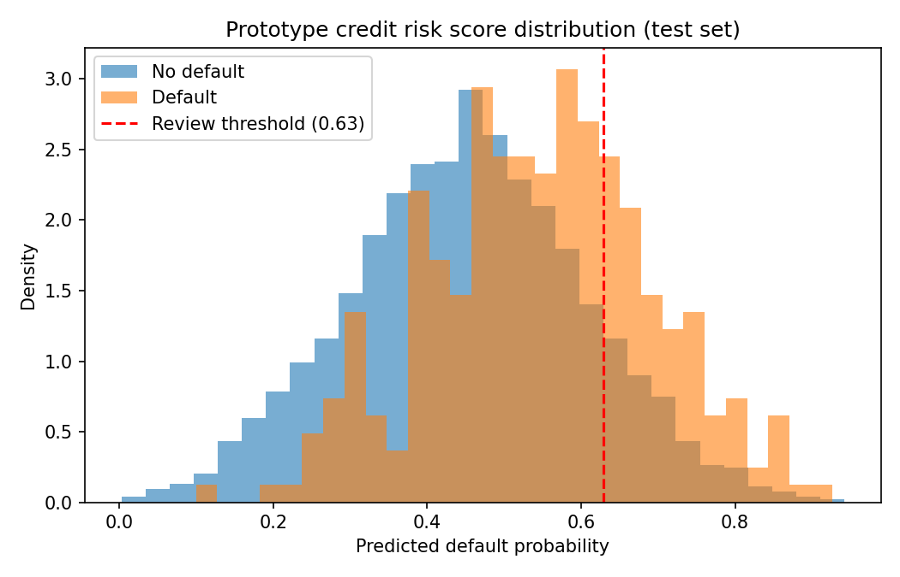

Chấm điểm rủi ro vỡ nợ tín dụng & gian lận bằng AI
Bản demo portfolio — Business Data Analyst (AI Products) | Thực hiện bởi Kevin Ngo
1. Bối cảnh kinh doanh & Vấn đề cần giải quyết
Các đội tín dụng bán lẻ/cá nhân phê duyệt vay tiêu dùng và thẻ tín dụng một phần dựa trên kiểm tra tín dụng thủ công và điểm số bureau tĩnh, vốn chậm thích ứng với các mẫu rủi ro mới phát sinh. Điều này tạo ra hai loại chi phí: phê duyệt các khoản vay sau đó vỡ nợ, và từ chối hoặc làm chậm quá trình xét duyệt cho khách hàng đủ điều kiện vì nhân viên thẩm định thiếu một tín hiệu rủi ro nhất quán, dựa trên dữ liệu.
Mục tiêu kinh doanh: giảm tổn thất do vỡ nợ trên các khoản vay không có tài sản đảm bảo, trong khi vẫn giữ khối lượng công việc rà soát thủ công ở mức quản lý được, không tạo ra các quyết định thiếu công bằng hoặc không thể giải thích.
2. Giả thuyết phân tích & Tiêu chí thành công
- Giả thuyết: một mô hình chấm điểm dựa trên hồ sơ hành vi/tài chính (tỷ lệ sử dụng hạn mức, DTI, lịch sử thanh toán, thời gian gắn bó, thu nhập) có thể xếp hạng rủi ro vỡ nợ tốt hơn các quy tắc bureau tĩnh.
- Tiêu chí thành công (kinh doanh): giảm tỷ lệ vỡ nợ trong danh mục đã phê duyệt, không làm tăng tỷ lệ từ chối vượt ngưỡng đã thống nhất.
- Tiêu chí thành công (phân tích): AUC cao hơn đáng kể so với baseline ngẫu nhiên (0.5); recall/precision được tính toán phù hợp với năng lực rà soát của bộ phận tín dụng.
- Ngoài phạm vi: tự động hoá phê duyệt/từ chối cuối cùng — output chỉ là công cụ hỗ trợ quyết định, nhân viên tín dụng vẫn giữ quyền quyết định cuối cùng.
3. Yêu cầu dữ liệu
| Thực thể dữ liệu | Thuộc tính chính | Hệ thống nguồn |
|---|---|---|
| Hồ sơ khách hàng | tuổi, thu nhập, thời gian gắn bó, phân khúc nghề nghiệp | Core Banking / CRM |
| Dữ liệu bureau tín dụng | điểm số bên ngoài, khoản vay hiện có, lịch sử nợ quá hạn trước đó | Bureau feed (batch) |
| Hành vi tài khoản | tỷ lệ sử dụng hạn mức, số dư, giao dịch trung bình | Hệ thống quản lý thẻ/vay |
| Lịch sử thanh toán | thanh toán trễ (12 tháng), trả góp bị bỏ lỡ | Quản lý khoản vay / thu hồi nợ |
| Nhãn kết quả | cờ vỡ nợ (quá hạn 90+ ngày trong 12 tháng) | Hệ thống thu hồi nợ / xóa nợ |
4. Prototype & Đánh giá (MVP)
Bộ dữ liệu giả lập (8.000 bản ghi, tỷ lệ vỡ nợ cơ sở ~14.8%) mô phỏng các thuộc tính trên; mô hình hồi quy logistic cơ bản được xây dựng để kiểm chứng phương pháp phân tích trước khi đề xuất cho AI Engineering xây mô hình cấp production.
| Chỉ số | Kết quả | Diễn giải |
|---|---|---|
| AUC (tập kiểm tra) | 0.674 | Xếp hạng rủi ro tốt hơn đáng kể so với ngẫu nhiên; baseline cho MVP |
| Ngưỡng rà soát | Top 15% điểm số cao nhất | Được tính toán phù hợp với năng lực rà soát của bộ phận tín dụng |
| Precision (nhóm được đánh dấu) | 0.29 | ~29% các trường hợp được đánh dấu là vỡ nợ thật |
| Recall (nhóm được đánh dấu) | 0.294 | ~29% các trường hợp vỡ nợ thật được phát hiện ở ngưỡng này |

Hình 1. Phân bố xác suất vỡ nợ dự đoán, giữa nhóm vỡ nợ và không vỡ nợ, kèm ngưỡng rà soát đề xuất.
5. Hạn chế & Rủi ro
- Dữ liệu giả lập — các mẫu hình chỉ mang tính minh họa; cần re-validate trên dữ liệu lịch sử thật.
- Precision (~29%) phù hợp cho hàng đợi rà soát thủ công, không phù hợp để tự động từ chối.
- Cần được Model Risk Management thẩm định độc lập trước khi đưa vào production.
- Khả năng giải thích được giữ nguyên nhờ dùng hồi quy logistic cho MVP; mô hình production cần giải thích dựa trên SHAP.
6. Khung KPI / Metrics
| KPI | Tần suất | Chủ trì |
|---|---|---|
| AUC / KS mô hình (thực tế) | Hàng tháng | Risk / Data Science |
| Tỷ lệ vỡ nợ thực tế vs. dự đoán | Hàng tháng | Risk |
| Precision hàng đợi rà soát | Hàng tháng | Credit Ops |
| Tỷ lệ override của nhân viên tín dụng | Hàng tháng | Credit Ops |
| Kiểm tra công bằng/bias | Hàng quý | Risk & Compliance |
AI-based Credit Default & Fraud Risk Scoring
Portfolio demo — Business Data Analyst (AI Products) | Prepared by Kevin Ngo
1. Business Context & Problem Statement
Retail/consumer lending teams approve personal loans and credit cards partly on manual credit checks and static bureau scores, which are slow to adapt to emerging risk patterns. This creates two costs: approving loans that later default, and rejecting or slow-walking creditworthy customers because reviewers lack a consistent, data-driven risk signal.
Business objective: reduce default losses on unsecured lending while keeping manual-review workload manageable, without introducing unfair or non-explainable decisions.
2. Analytical Hypothesis & Success Criteria
- Hypothesis: a behavioral/financial-profile scoring model (utilization, DTI, payment history, tenure, income) can rank-order default risk better than static bureau-only rules.
- Success criteria (business): reduce default rate within the approved book, without increasing rejection rate beyond an agreed ceiling.
- Success criteria (analytical): AUC materially above random baseline (0.5); recall/precision sized to credit ops' review capacity.
- Out of scope: final approve/reject automation — output is decision-support, human officer retains final call.
3. Data Requirements
| Entity | Key attributes | Source system |
|---|---|---|
| Customer profile | age, income, tenure, employment segment | Core Banking / CRM |
| Credit bureau data | external score, existing loans, prior delinquency | Bureau feed (batch) |
| Account behavior | credit utilization, balances, avg transactions | Card/Loan servicing |
| Payment history | late payments (12m), missed installments | Loan servicing / collections |
| Outcome label | default flag (90+ DPD within 12m) | Collections / write-off system |
4. Prototype & Evaluation (MVP)
Synthetic dataset (8,000 records, ~14.8% base default rate) mirroring the attributes above; baseline logistic regression scoring model built to validate the analytical approach before proposing it to AI Engineering for a production-grade model.
| Metric | Result | Interpretation |
|---|---|---|
| AUC (test set) | 0.674 | Ranks risk meaningfully better than random; MVP baseline |
| Review threshold | Top 15% of scores | Sized to match credit ops' review capacity |
| Precision (flagged) | 0.29 | ~29% of flagged cases are true defaulters |
| Recall (flagged) | 0.294 | ~29% of actual defaulters caught at this threshold |
Figure 1. Distribution of predicted default probability, defaulters vs. non-defaulters, with proposed review threshold.
5. Limitations & Risks
- Synthetic data — patterns are illustrative only; must re-validate on real historical data.
- Precision (~29%) suitable for a review queue, not for auto-decline.
- Requires independent Model Risk Management validation before production use.
- Explainability preserved via logistic regression for MVP; production model needs SHAP-based explanations.
6. KPI / Metrics Framework
| KPI | Cadence | Owner |
|---|---|---|
| Model AUC / KS (live) | Monthly | Risk / Data Science |
| Actual vs. predicted default rate | Monthly | Risk |
| Review queue precision | Monthly | Credit Ops |
| Officer override rate | Monthly | Credit Ops |
| Fairness/bias check | Quarterly | Risk & Compliance |